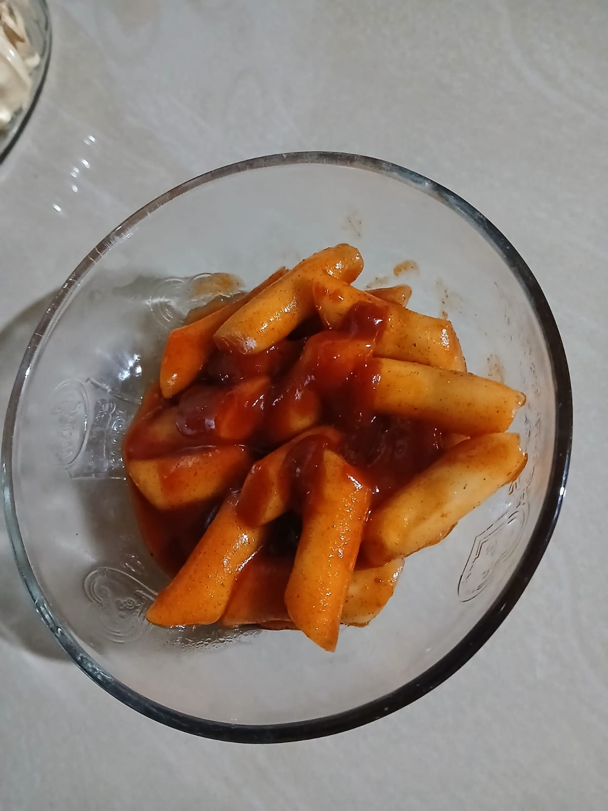

Ivana Nur Safina • Pengusaha Muda dalam proses • SMK Ma'arif NU Tirto
TK: TK RA MUSLIMAT ROWOYOSO
SD: SD 01 WERDI
SMP: SMP N 02 WONOKERTO
SMK: SMK Ma’arif NU Tirto — Teknik Komputer & Jaringan (TKJ)
Hobi: memasak, menulis cerita, bermain game, menonton film
Keahlian: dasar-dasar jaringan komputer, kreativitas desain
Cita-cita: Pengusaha Muda
Motto: "Bahagia itu sederhana, cukup syukur sama apa yang ada"
Bahagia kui sederhana, cukup bersyukur karo opo sing mbok duweni
السعادة بسيطة، فقط كن شاكراً لما لديك
Happiness is simple, just be grateful for what you have
| Waktu | Kegiatan |
|---|---|
| 05.00 | Bangun tidur |
| 07.00 - 15.00 | Sekolah |
| 16.00 | Makan |
| 17.00 - 22.15 | Mengerjakan tugas & aktivitas bermanfaat |
| 22.30 | Tidur |
Saya lahir di Pekalongan pada 15 Juni 2009. Sejak kecil tinggal bersama keluarga di Werdi dan tumbuh dengan cinta pada cerita dan memasak. Pengalaman sekolah dan lomba membuat saya percaya diri melangkah menjadi pengusaha muda kelak.
Email: sapinaipana@gmail.com
Tel: 089630608498
Ganti foto profil dengan mengunggah foto dan mengganti atribut <img src="...">.
SAYA PINA MEMILIKI BEBERAPA KELEBIHAN DALAM DUNIA MEMASAK YANG MEMBUAT SAYA SEMAKIN SEMANGAT BELAJAR DAN BERKREASI:
Topoqi adalah hidangan khas Korea yang terbuat dari kue beras kenyal, dimasak dengan saus pedas manis gurih, dan sangat menggugah selera.
Topoqi ala Pina, dengan rasa pedas manis gurih, tekstur rice cake kenyal, ditambah topping keju lumer dan telur rebus yang membuatnya semakin istimewa. 🍲✨
